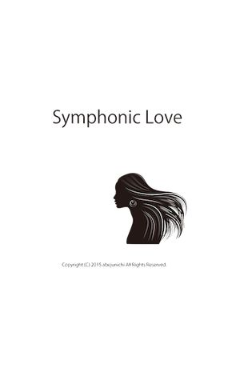
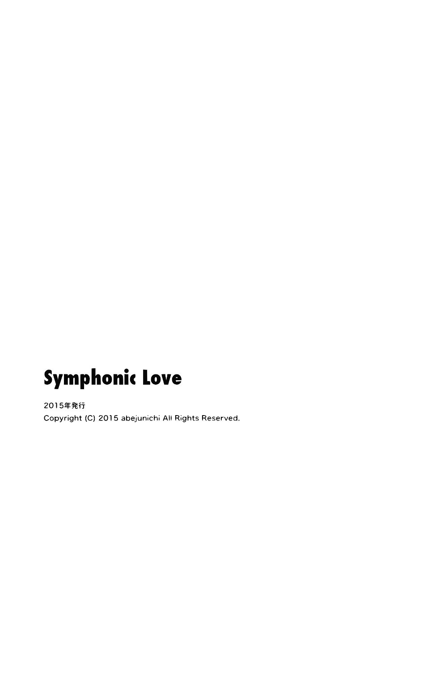

| Symphonic Love | |
| abejunichi | |
| (2015) | |
include
We should fall in love
Symphonic Love

1
いつも二五歳の誕生日を想像してきた。なぜかはわからない。とてつもない幸運が訪れるような気もしていたし、大災害が起きて、あっけなく死んでしまうかもしれない。ただ二五歳の誕生日だろうということがわかっている。日にちだけが心の中で予言されている。そういうことが人生にあることは、特別なことだ。人生はその日を境に、良いほうにだって、あるいは悪いほうにだって変わる。けれどそのままの自分ではいられない。そしてこのままの自分ではいたくない。だから人生のひとつの契機としてその日を夢みている。
その日、たとえ何がおきたとしても、僕は以前よりも、もっと素晴らしい自分になる。そう決めている。どんな困難も、その日まで乗り越えようと思ってきた。そういう思いはひとつの信仰のようなものと言えるようになっている。夜、眠るときにみる夢は、時々は二五歳の誕生日に起きる何かの示唆をあたえてくれる。けれど、目が覚めるとそういう夢の内容を少しも思い出すことができない。ただその日、とてつもなく幸せな思いをする感触だけが目覚めるといつも残っている。
我にかえると、結局、二五歳の誕生日には何も起きなくて、ただそういう幸福を夢みているにすぎないと、時々は自分の予感を疑う。誰にもそういうことを話さなかったけれど、もし誰かに話したら、たちまちばかにされてしまうことはよくわかっている。きっとこの世の中では未来のことを話すことができるのは、よほど優れた学者か、あるいは、誰かをだますことが平気な占い師みたいな人々か、純粋な子どもだけだ。
だから黙っている。自分の二五歳という年齢の到来に、とても重要なことがあることを人々に隠している。確信はあっても、無関係な人々にとって未来は本当にやってくるまでは、わからないことだからだ。
自分の二五歳の誕生日の三ヶ月も前から、会社に休暇を願い出ている。その前日と、翌日に休みを申請した。二五歳の誕生日といっても、それは深夜の〇時からはじまり、次の日の深夜〇時で終わるわけではないかもしれない。念には念をいれておく必要がある。それまでこれといった休みをとってきたわけではないし、会社にいなければならない仕事は、入念にその三日間をさけてスケジュール調整してきた。だから何も問題はない。
三日間の休暇の前夜、グラスに買っておいたシャンパンを注ぎ、誕生日のイブのはじまりを祝う。時刻は二二時三六分をさしている。今日眠ってから、朝、目覚めると、ずっと前から動いていたカウントダウンが、本当に現実のものになる。そして特別な日の前日にかつて僕だったことを、もう一度取り戻そうと思う。けれどそう考えているうちに眠りこんでしまう。
夢はいつもより鮮明に描かれる。地下鉄を乗り継いでひとりの女性を探している。彼女の後ろ姿を見かけたと思ったら、彼女は駅のホームに降りて、反対方向の車両に乗り込む。僕は追いかけている。大勢の人の波にぶつかりながら、彼女の後ろ姿を見失わないように。彼女の次の行動を予測する。すると彼女が海を見たがっていることがわかる。夢の中では言葉なく思いが伝わる。いつしか僕らはともに海辺にいる。冬の寒い海風の中で、彼女の髪が舞い上がる。その瞬間に、眠っているのに瞼を閉じる。まだ彼女の顔を知りたくない。そう夢の中で思っている。
あるいは深い森の中で、彼女は木々に寄りかかっている。冬の木々は、雪がつもり、雪の美しい華が咲いている。彼女はとても寒いというようなことを言っている。彼女に目隠しされる。そしてその目隠しがとれる。すると辺り一面の景色が変わる。けれどやはり自分で目を閉じてしまう。たとえ夢の中でも、ものごとが実際に起きるその瞬間までは、何もみたくない。
僕はドアを開け、ドアを開け、ドアを開ける。部屋という部屋は、どこまでも続いていて、ベッドや、リビングや、ソファなんかが、きっと誰かが住んでいるみたいに、生活の中に溶け込んでいる。けれど人は誰もいない。僕は部屋を開けてまわり、彼女の姿を探す。幾つものドアを開けると、一番奥には寝室がある。とても大きなサイズのベッドがあって、彼女はそこに横たわっている。美しい音楽が響いている。その音楽の中で、彼女の寝息は聴こえない。でも、そのまま彼女の目覚めを待っている。
そして僕は目覚める。そしてこれまでとは違って、夢が、ある女性との出会いについてだと知る。誰かと出会うのだ。それはきっと間違いない。
目が覚めるとノートパソコンを開いていくつかのメールをチェックする。特に大した用件はない。そのまま、いつものようにニュースサイトの記事をピックアップする。テーブルの上のトースターにパンをセットし、コーヒーをいれる。そしてお気に入りのプレイリストを再生する。音楽はシャッフルされて、次に何の曲がかかるかわからない。フレーズは覚えているけれど、曲名まで覚えてない曲を聴きながら、パンをかじり、ニュースチェックを続ける。
次にシャワーを浴びる。夜はいつも寝てしまうから、寝ぐせを直すのに、朝、シャワーを浴びることは都合が良い。そしてドライヤーで髪を乾かす。ワックスをつける。お気に入りのロングT シャツを着る。ジーパンをはく。フードの付いたコートをはおる。そしてイヤフォンをする。スマートフォンでさっきのプレイリストの続きを聴く。
まず、街へ向かおうと思う。特別な用事はない。かつてしていたことを同じようにしようと思っているだけだ。
駅までの道。空は晴れ。風は冷たいけれど、身体の芯まで凍えるというほどではない。完璧な空というわけではないが、冬にしては暖かい。電信柱がなくなった街を想像しながら、駅まで歩く。まだそういうコードのない街になるまでは一〇〇年ぐらいかかるのかもしれない。もう電波が色んなものを繋いでいるにも関わらず。
2
鉄道は旧世界の産物だと思う。もし、新しい世界がはじまっているのなら、鉄道はもう主役ではない。駅の古びた階段を上りながら、一九世紀にイギリスで走っていた黒い蒸気機関車のことを考える。傘をさしてビクトリア朝時代の人みたいな格好をした古い人々が鉄の塊に乗ることを夢みている。満員電車にのることにうんざりした通勤列車にならぶ僕らがそのなれの果てだ。毎朝のラッシュを思い出して、嫌な気持ちになる。いったいこの先、何年、こういう思いをしなければならないのか。テロリストが狙う地下鉄なんて、きっと古い世界に飽き飽きした僕たちの無意識の産物だ。昔からある世界が、きっともう終わろうとしていて、だから古く寂びれていくものを憎むのだ。
それでも音楽は電車にまつわる嫌な思考を吹き飛ばす。絡み合うリズムと美しい旋律に、窓の外の景色が美しいものに変わる。通りすぎていく町。光の射す田畑。小さな池と森。あぜ道を歩く少年。そしてトンネル。昔、夢中になってみた電車の外の移り変わる光景。僕は、今また動く美術館にいるのだ。
時刻は昼過ぎで、平日だからローカル線は人がそれほど多くない。がら空きの電車内で、ちょっとステップを踏んでみる。音楽はあらゆる場所をダンスフロアに変える。日差しが軽やかに角度によって光と影の模様を変化させる。人に気づかれないようにリズムをとる。自然に身体が動く。手を大きく広げたくなる。頭の中では、クラブで踊っているように周囲にいる人々を愛おしく思う。彼はどこから来てどこへいくのだろう？ ちょっと急いで電車に乗り込んだみたいだけれど、恋人との待ち合わせでもあるのだろうか？ おばあさんは深くシルバーシートに眠り込んでいる。お孫さんの夢でもみているのだろうか？ あるいは少女だったことを思いかえしているのか。
そして彼女が電車の中に乗り込んでくる。電車内を見渡し、空いている席を見つけて座る。そしてイヤフォンをして心地良さそうな微笑を浮かべる。もしここがダンスフロアなら、僕らは同じリズムに揺られ続ける仲間だ。ちょっとした笑顔の交わしあいで、話をはじめ、恋に落ちることができる。うまくお互いを尊重しあうことができれば、永遠の恋人になれるかもしれない。そして夢をみ続けるのだ。覚めることのない夢を。
けれど彼女はひとつかふたつの駅を通り過ぎると、深く眠り込んでしまう。彼女の眠る姿を、そっと頭の中でスケッチする。髪の毛と輪郭と微笑がうまく書けたところで、彼女は目覚める。そして、ふとしたひょうしに、何かに気づいたのか、思い出したように駅の、その発車間際の電車から降りてしまう。瞼の奥に、彼女の髪の毛と輪郭と微笑だけが残る。僕は仲間がいなくなってしまったことをさみしく思う。たとえ違う場所からやってきたとしても、目的地が同じなら、もっと心を通い合わせるチャンスがあったのに。
昔そうしていたみたいにレコードショップに行って、音楽を試聴しよう。いくつか気に入った曲があったら、サイトからダウンロードするのもいい。服屋を覗き、良い音楽が流れている店で服を久しぶりに買おう。洋書のある本屋に行って、デザインの本を眺めよう。そういうことを思い浮かべる。
駅の階段を降りる。改札をくぐり抜ける。迷路のような地下街を歩く。あちらこちらにブランド店がある。若い女性たちが買い物をしている。客のいない店では、店員が店内のディスプレイをチェックし続けている。僕は客のいる店といない店の違いについて考える。そのそばを彼女が通り過ぎていく。地下街を歩き慣れた足どりで歩いていく。思わずふりかえる。高いヒールの音がフロアに響きわたる。清潔で人工的な地下通路を歩いていく女性。その後ろ姿が小さくなっていく。僕にはたいした目的はない。けれど、彼女には明確な目的があるだろう。足どりから、それは感じられる。次に行くべき場所があり、会う相手がいる。いろんなことが違う。僕は地下通路の壁にもたれかかる。そして行き交う人々の歩くスピードの速さに、戸惑う。
旅行鞄を持った女性。ジャージ姿の高校生の集団。白いマスクをした男。赤い傘をもった女性。そういえば、天気予報は晴れだっただろうか。検索し、降水確率を調べる。くもり時々晴れ。降水確率二〇パーセント。何も問題はない。そして晴れの日に赤い傘を持ち歩く女性についてしばらく考える。赤い傘は彼女のお気に入りなのだろう。けれど本当のことはわからない。凄く天候に用心深い可能性だってある。通り過ぎていく誰のこともわからない。誰も僕のことを知らないように。
地上への階段はすぐに見つかる。光の射す方へ一歩、一歩とのぼっていく。街のどこにでるかはわからない。地下と地上が頭のなかで完全にリンクしていない。外に出ると強い風が吹いている。人々が身体を小さくして歩いている。空は周囲をビルに囲まれてとても遠くにある。ドラッグストアの看板と、コンビニエンスストアの看板。至る所に看板がある。道路では、渋滞にイライラしているドライバーがいる。太陽の光は建物に遮られてここまでは届かない。横断歩道の信号が変わるのを待ち、そして交差点をわたる。停車している車の運転者と目が合う。信号が青になる間際で走りだしそうだ。僕は足早く、交差点をわたりきる。
行き交う人の群れ。すれ違い続ける人々。狭い空。都市は人で溢れている。
裏路地にあるレコードショップで電子音に浸りきる。何枚かレコードを試聴する。太いベース音。リバーブのかかったドラム。艶やかな声。驚くような展開。徐々にうねりをあげていく。鼓動が早くなる。手が汗ばむ。ビートがはやくなっていく。目を閉じると、ここはどこか遠い世界のような気がする。あやしい香りが立ち込めていて、闇の中で人々が踊っている。僕たちは、夜に囲まれながら、火を囲み、踊る仲間だ。僕もそのうちのひとり。目を閉じながら身体をリズムにまかせる。軽くトリップしたような気持ちになる。けれど、それは一瞬のことで、目をあければターンテーブルが規則正しく回転している。秩序だった世界がある。刻まれた溝がデータとして記録されていて、それを再生することで音を奏でているだけだ。でも、どこか遠くへ連れて行ってくれる音楽がこの世界には存在する。
レコードジャケットのデザインの絵柄も気に入る。だから、プレイヤーを持っていないのに、そのレコードを買う。音楽はダウンロードすればいい。けれど、このコレクトする感覚は、なかなかやめることができない。
ビニールのバッグに入ったレコードを店員から受け取ると、また街の中へと戻っていく。店を出た後は、少しだけ何か世界が変わったような気がする。
服をみようと、ガラス張りのビルに入る。その建築様式に惹かれる。イヤフォンをはずし、どこか、いい音が鳴っている服屋を探す。センスが感じられる店じゃないと服を選ぶ楽しみもない。簡単な方法として、趣味がいいと感じられる音楽が流れている店を探す。音楽をひとつのものさしにしている。
いくつかの店では悪くない音が流れている。けれど心に響かない。店員の、バイヤーの、経営者の哲学や愛が音楽から感じられない。2 F 、3 F 、4 F と、次々と店を巡っていく。建物は磨き上げられている。フロアというフロアが光を放っている。誰が磨いているのだろう？
どの店でも感じの良さそうな店員が、にこやかに微笑んでいる。雰囲気の良い音楽が流れている。けれどどこまでも人工的だ。その迷路を歩くように上へとのぼっていく。
いちばん上のフロアまで上っても、何もみつからない。磨き上げられたフロアとガラスがどこまでも続いているだけだ。向かいのビルのガラスには、日差しが反射してきらきらと輝いている。しばらく高層で、息を深く吸い、ゆっくりと吐く。外の世界を見下ろす。人々がとても小さくみえる。
まだ陽が上っている間に地下鉄に乗り、小規模店舗が並ぶ街の通りへ向かおうと思う。お気に入りの洋書屋はそこにある。また地下へ降りていく。エスカレーターに乗る。長い、長いエスカレーターだ。空気が薄くなっていくような気さえする。人工的な光だけが、世界を照らしている。いちばん下まで降りると、どこまでも暗い巨大な穴が線路とともに続いている。どこか遠くで地下鉄が闇の中を走り抜ける音がする。プラットフォームには、まばらに人がいるだけだ。その穴に吸い込まれそうな気がする。けれど、その時、いくつものアナウンスの中に、名前を呼ぶ声が聴こえる。
「‥様。お連れ様がお呼びです。駅のカウンターまでお越しください」
自分の名前が呼ばれているとわかったのはずいぶん後だ。地下を走り抜ける列車の音が耳の奥で響いている。間には、次の電車が機械的なトラブルのため、予定より一〇分ほど遅れるというアナウンスも混ざっている。けれど間違いなく、現実的に誰かが呼んでいる。それは最初、どこか他人の名前のようにも思える。けれど、何回か繰り返されるアナウンスを聴いていると、それは間違いなく僕を呼ぶ声だと思う。
3
地下鉄の構内にアナウンスが繰り返し響いている。僕の名前を呼ぶアナウンスは、電車のトラブルのアナウンスの間に、二、三回繰り返されているだけだ。心当たりはない。僕は都市でひとりきりだ。連れはいない。しかし誰かが呼んでいる。
僕はまた長いエスカレーターを上る。
駅の改札口で名前を言うと、駅員は、やっときたというような、ほっとしたような安堵の表情をうかべる。
「お連れ様は、お疲れのようで、この地図に書かれているカフェで待っているとのことです。とにかく取り乱されているので、お声かけしてください」
そういって地図をわたす。誰かと勘違いしているのではないだろうか？
「急にひとりになったようで、ひどく心細そうでした。本来は駅の構内アナウンスはあまり頻繁には使用しないのです。けれど、あまりにひどく取り乱されていたので」
「本当に僕の名前を呼んでいたのですか？ 心あたりはないのですが」
「確かにレコードを持った男性とおっしゃっていたので、間違いはないと思います」
そう駅員は言うと、僕に地図をわたす。その場所へ行ってみることにする。
「お連れ様なんですよね？ 赤い傘を持っている女性だったのですが」
カフェはビルの一階の大通りに面してある。仕事を抜け出したビジネスマンや、御婦人が、ひとりで、あるいはふたり連れぐらいでキャラメル・ラテやカフェオレを飲んでいる。スマートフォンやノートP C に夢中になっている人もいる。僕は店内で赤い傘を持った女性を探す。
ひとり、うつむいて泣いているようにみえる女性がいる。彼女のテーブルの脇には、赤い傘がある。彼女に見覚えはない。けれど、声をかけてみようと思う。コーヒーを注文し、テーブルの前に立つ。「相席いいですか？」
彼女はうつむいたまま、うなずく。
「駅の構内アナウンスで名前を呼ばれたんです。駅員に聞くと、ここで待っていると言っていました。同姓同名の方でもいるのかな？ とにかく呼ばれた気がしたので、こちらに来てみたのですが」
そう言ってみる。彼女は黙っている。僕は地図を差し出す。
「この地図、わかりやすかったですよ。すぐにここの場所がわかりました」
彼女は地図を受けとる。そしてキャラメル・ラテか何かを飲む。若い女性だ。
顔をようやくあげると、彼女は静かに話をはじめる。少し泣いていたのかもしれない。
「わたしが呼んだ人は、別の人だったのかもしれません。けれど、ここにあなたが来たということが真実です」
僕は、彼女が何を言っているのかわからない。彼女は話しはじめる。
「わたしはあなたと出会いました。決まったことを受け入れましょう。難しいことです。けれど、あなたを受け入れようと思います」
「ちょっと待ってください。確かにあなたは僕と同じ名前の誰かを呼んでいたのかもしれない。でも、あなたは今、はじめて出会った僕の何を受け入れるというのですか？」
彼女はしばらく黙った後、静かに言う。
「あなたはいつも、ひとりの女性を思い浮かべていたでしょう？ それがどんな女性なのかは、わからない。けれど、いつかあなたは出会うと思っていたのでしょう？」
僕は少し考える。しかし思ったことを話す。「誰だって誰かと出会うことを考えます。ひとりでずっと生きていたら、ぬくもりを共有することだって、冬の寒い日には思い浮かべます。けれど心というものがあるし、あなたにだって心があります」
彼女は言う。「けれど、もう決まったことなのです。受け入れましょう」
その気になれば、すぐに席を立ってカフェを離れることもできた。けれど、心の中で思い描いていたことが、本当に現実として存在し、その偶然が、いささか奇妙な形とはいえ目の前にある以上、運命のようなものに抗うことの難しさを感じる。
コーヒーを飲む。そして今朝みた夢の話をする。
「誰かと出会う夢をみました。地下鉄で、彼女を追いかけて、そして、次の瞬間には、海辺にいました。けれど、それがあなただとは限らない。そして、何より、ぼくらはお互いのことを何も知らないのです」
彼女は言う。「心が強く求めることは、現実になります。それがどういうものであれ。わたしも、あなたを呼んでいた。あなたもわたしを呼んでいた。もちろんそれは誰かを求めるという意味においてです。そして願いは、時には奇妙な偶然を装ってあらわれる。地下の世界でわたしたちは繋がっています。誰かが呼ぶ声を、誰かががみつけてくれたなら、それを決まったこととして、受け入れようと思うのです」
「誰かが呼んでいると思ったんです。夢は望んでいることの投影で、ただの夢だと思っていました。けれど、それだけではないということですね？」
「わかりません。けれど、わたしは誰かを呼んでいた。そしてあなたがあらわれた。どのような気持ちであなたがここにきたのかもわかりません。でも偶然だとしても、もし、時間が許すのなら、わたしたちはお互いのことを、知る時間を持ってもいいとは思いませんか？ とてもおかしなことを言っているとは思います。でも、なぜかとても大切なことのように思えるのです」
彼女の言葉からは真剣さが感じられられる。奇妙な偶然。不思議な出会い。僕は今、そういう場所にいる。
「少し外を歩きませんか？」
彼女は微笑む。
並んで夕方の街を歩きはじめる。偶然が僕たちを引き合わせた。その偶然を信じはじめる。僕は話しだす。
「自分が自由に解放される世界を夢みてきました。そしてわかちあうことを。日々の仕事のことや、人々とのささやかな行き違いや、暗く考えてしまう未来のことを忘れて、心のままに誰かと話をしてみたかった」
彼女は微笑みを浮かべながら話す。
「話をすればいいのです。わたしはその話を受け入れます。もちろん、普段は、誰かが話すことを、自由に受けとめるということは難しいことです。話す人間も、聴く相手のことを考えます。だから自由に話しているようでも、わたしたちは常に自由ではない。人間がふたりいれば、自由に話すことも難しい」
「自由にといっても、まったくの自由を望んではいません。あなたの心を考え、望んでいることを想像します。そして、最適な言葉をみつけようと努力します。きっと自由に生きるということは、誰のことも気にしない、そういうことではないのだと思います。何より、わかちあいたいと思える人がいるとしたら、言葉は、自然にあふれてくる」
彼女は言う。「自然に、言葉があふれるなら、ずっとわたしは話を聴いています。きっと楽しい話だから」
彼女はひとつひとつの言葉の真意をくみとるように話をきく。だから僕は、自然にこれまでのことを話す。過去のひとつひとつの出来事が、そっと静かな意味をもって立ち上がる。
けれど、そうしたこれまでの人生のことは、お互いのことを知ることには繋がっても、未来には辿り着かない。何より、僕たちは別の世界にいて、別のことを考え、別の人たちに囲まれて生きてきたのだから。
僕は言う。「夢について、話をしませんか？」
「夢？」と、彼女は聴き返す。僕は言う。「そう。夢についてです」
最初は、彼女が夢について話す。僕はその夢をきく。
「人には、想像する自由があります。どんなことでも。もちろん、幼い夢だってある。たとえばわたしは小さい頃、鳥のように空を飛んでみたかった。森の緑の一枚の葉っぱになって、雨露を身体であびたいと思っていました。そういう自然なものになることを望んでいました。自分が生きていると感じられる時は、そういう自然なものに触れた時です。そうではない時は、わたしはただ泣いているひとりの女の子にすぎません」
僕は言う。「けれどあなたはただの泣いている女の子じゃありません。あなたは何かを知っていて、そして赤い傘を持っています」
彼女の持つその赤い傘は、何かを伝えようとしている。雨が降る気配はない。天気予報も、今夜は晴れだと言っている。誰も雨のことは話していない。 「僕にはわかりません。こんな晴れた日に傘を持つことの意味が。今日、ふたりも傘を持つ女性を見ました。二人とも赤い傘を持っていて、そのことが心に何か残っています」
彼女は言う。
「今日、自然に傘を手にしました。とても自然に」
彼女は、そう言うと、すこし立ち止まり、並木道の木をみる。夕暮れが、彼女と都市と街路樹を照らしている。僕はその光景にふと足をとめる。
「僕の話をします。音楽が好きです。音楽家が一人で作っているレコードも、何人かで作っているレコードも好きです。ひとりで作っているレコードには、ひとりの人間が持つことができる、喜びや哀しみの限りがあらわれているような気がします。音楽を聴きながら、彼と同じ気持ちになっています。それは新しい服を着ることに似ています。僕は服を買いにでかけて、しょっちゅう、音楽を買ってきてしまいます」
そういうと彼女は笑う。
僕は話を続ける。
「何人かで演奏している音楽は、その中にある調和に憧れます。すべてが彼らのようにひとつになれたならと思います。彼らは同じ夢をみています。誰にも役割があり、美しい世界を作り上げています。それはこの現実の中では奇跡のように思える響きがあります。お互いが、独立した人間なのに、彼らは、音楽のことになると、それぞれが手の役目をしたり、足の役目をしたりします。それは生きています。呼吸をしています。魂が宿っています。そしてひとつの音楽を奏でています。僕はその音を聴いています」
「そういう夢の響きを聴いているのですね」
僕は言う。「そうかもしれない」
僕は彼女の言葉にうなづく。
4
時刻が夜に近づくと、あらゆる新しい建物の裏側で、古くなってさびれてしまった都市の汚れが隠されて、輝く街が出現する。醜く、汚いものは夜の闇に紛れ、そっと息を潜めている。大昔に輝いていたであろう通りも、そのほころびが隠れ、新しい息吹が吹き込まれたように変貌する。けれど、それは光が作り出す幻想だ。騒がしい中を、僕らはできるだけ静かで新しい場所を求めて歩く。
多くの光に誘われて、街にやってきた人々。その真実の中で身動きができずにとまどっていた人々も、夜になると、みずからの場所を探し求めはじめる。僕らも、きっと同じだ。
彼女が指さしたのは、奇妙な料理店だ。ドアを開けると、スペースとスペースに赤いカーテンがかかった空間が広がっている。ウエイターがうやうやしく一礼すると、僕らを奥の空間に案内する。カーテンをくぐり抜けてウエイターが出ていってしまうと、僕らはふたりきりになる。静かな音楽が、そっと流れている。
僕たちは、夕食をともにする。落ちついた暗い照明に彼女は馴染んだようだ。僕はシャンディ・ガフを飲む。彼女は、シャンパングラスをゆっくり傾ける。
彼女の受け入れるという言葉には、魔法のような響きがある。その言葉を聴いてから、ずいぶん自由になったと思う。はじめて会った人なのに、懐かしい感じがしている。子どもの頃に戻ったように、彼女を親密な存在として感じている。僕は心を開く。彼女はそっと話に耳を傾ける。世界の未来について問いかけ、心の真実について語り、歴史の変化について考えをのべる。どこか遠い場所で考えてきたことが、彼女を前にすると、実際の言葉になる。彼女はそういう話のひとつひとつに耳を澄ませてくれている。ずいぶん話をしたような気がする。
「ずっと思っていました。僕はいつまでも同じ場所にいて、同じ過ちを繰り返し続けるのではないかと」そう言う。「誰と出会っても、何かを伝えようとしても、同じ場所で衝突し、関係をだめにしてしまい、ひとりになってしまうのではないかと思っていました」
僕は本心を語る。少しお酒がまわってきたのかもしれない。
「でも、ようやく違うのだということがわかってきました。歴史が繰り返すというように、人生も同じ場所で間違い続けるのだと思っていたのです。けれど、違うのです。僕が自分の過ちを繰り返さずにいれるように、歴史も過ちを繰り返さない。そう思うようになってきました。傾向として、また同じところでつまづくのかもしれない。それは修復しきれない心の傷が、何度も同じ過ちへ誘っているからです。でも、あなたが受け入れると言ってくれた時に、自分をめぐる因果から少し逃れて、過ちを繰り返さない道へ一歩、踏み出したという気がしています」
彼女はその話を静かに聴いてくれている。とても小さく音楽が流れている。僕たちはふたりで静かな世界にいる。
「何かを間違ったとします。しかし、そのことを戒めるのは、本当は時間が必要なのだと思います。自分が同じ場所で何度も同じ過ちを繰り返していることに、もし気づくことができたとしても、自分だけでは確信を持つことができません。僕たちは、生まれた時には万能感を持って生まれてきます。しかし、父や母という他者を理解するとともに、苦しみも生まれます。生きていることの本能的な感覚として。人と人の間にある隔たりは、自分が自分であるということを知れば知るほど深まっていきます。でも、確かに苦しみは必要なのです。痛みがなければ、あちこちにぶつかってしまって傷だらけになってしまう。痛みがあるからこそ、痛みを逃れることを学びます。苦しみも同じです。いつか苦しみを逃れる方法をみつけることができる。ある意味では、誰もが、苦しみから逃れるために生きているのです」
彼女は話をずっと聴いている。そして必要だと彼女が思った時に言葉をかえす。
「何か苦しいことがあったのですね」
そう彼女が言った時、苦しかったことを自然と思い返す。確かに苦しかった。静かに苦しんでいて、そのことを言葉にせずに、やり過ごしてきた。世の中の人が正しいと言うことに沈黙してきた。人のことを考えて、できるだけ良いことができるように行動してきた。誰かの笑顔を願ってきた。その中でささやかな個人的な幸せがあった。そういう時にだけ自由に心を解放することができた。心の中に穏やかな音楽をいつも思い浮かべた。すべてを言葉にすると自分自身も、傷つけてしまうと思った。
「苦しい時、静かな音楽を思い浮かべます。心が苦しみに飲み込まれてしまわないように。そして、それもいつか終わります。苦しみを知ることは、その苦しみを逃れることを知ることだから」
「わたしにできることはありますか？」と彼女は言う。彼女は見抜いている。そしてわかちあおうとしている。そう感じる。
僕は言う。「もし、僕がうまく言葉にできなくて、黙ってしまっても、気にしないでください。あまり言葉にすることができないんです」
「無理に話すことはありません。もし、あなたがうまく話せないことがあるのなら、その沈黙を受けとめます。心は、言葉にするその前からあるのです。沈黙を共有しましょう」
彼女がそう言うと、とても静かな音楽だけが、僕たちを包む。静けさが、その空間に音楽が流れていたことを思い出させる。音楽は徐々に小さくなっていく。その消えさりそうな一音一音に、耳を傾ける。そして、音楽は消えていく。それは降り続けていた雨が、そっとあがるように、やさしく消える。心の中に、その一音一音の響きだけが残っている。しばらくその音に耳を澄ます。いくつもの苦しみが、その音とともに消えていったような気がする。それはささやかな心の変化だ。でも、何かが終わり、もうすぐ新しい何かがはじまろうとしている。
やがて僕は正直に打ち明ける。「明日、何かが起きると思っています。あなたの赤い傘のように、未来はひとつの夢として、そっと提示されています。ずっとそのことを感じています。これまで苦しいことが沢山ありました。死にたいと思うこともありましたし、生きていてもしょうがないと思うことだってありました。けれどもし、あなたが夢にあらわれた女性なら、夢がひとつ現実になった。僕は自分を信じることができる」
「わたしにも何か役立てることがあるのね？」
僕はうなづく。
彼女の言葉を超えた微笑みが心を満たす。
過去のすべては、どこか遠くで起きたことだという気がする。何か物語のなかだけで語られ、その意味を自由に手にとることができるように、片隅にある。だから自由にその意味だけを考えることができる。因果から解き放たれて、今、あたらしく生まれようとしている子どものように、世界を感じはじめる。
すべては生まれ変わろうとしている。僕はそう思う。
赤いカーテンが開かれ、ウエイターが静かに傍らに立つ。そして手慣れた手つきでグラスにワインを注ぐ。そして静かにカーテンの向こうへ消えていく。僕と彼女は、はじめてグラスを重ねる。一対のワイングラスが触れ合う。静かな音が響く。何かの儀式みたいだと思う。口にグラスを持っていく。赤い液体がほのかに香る。雫の一滴一滴が喉を潤す。彼女もそっとグラスを口に重ねる。
やがて店のあちらこちらから、歓声があがる。隔てられた空間が突如、開かれたように。誰かが、ハッピーバースディと言う。多くの人が、ハッピーバースディという。拍手が鳴り響き、店は、急にちょっとしたお祭りのようになる。僕は何が起きたのだと思う。きっと誰かが誕生日を迎えたのだろう。けれどその言葉は、誰か知らない人のためではなく、僕のために向けられた言葉なのかもしれない。わたしたちは地下の世界で繋がっている。もう、ひとりではないのだ。
しばらくすると騒ぎが収まり、再び音楽が響きはじめる。祭りは終わり、平穏が訪れる。彼女はワインを飲むと、とても素敵な笑顔で囁く。
「ハッピーバースディ」
時刻は、深夜〇時を少しすぎたところだ。
目覚めるとすぐそばには彼女がいて、もう僕がひとりではないことを教えてくれている。もし、長い人生のうねりの中で、大雨が降ってきたなら、きっと彼女はその赤い傘を差しだして、その雨が通り過ぎることを一緒に待ってくれるだろう。古くなってしまった過去は、やがてはるか遠くに消えさり、その痕跡も消えてしまう。そして新しい日々がはじまる。それは日常のなかに、たとえ凍えるような冬のさなかでも、あたたかな日差しのように待ってくれている。誰かを求めているのなら、いつか誰かがそっと手を差し伸べてくれるように。
これはささやかなはじまりにすぎない。でもいつか苦しみを逃れて、誰もが誰かを愛するようになるだろう。
「海を見に行こう」
眠っている彼女にそう語りかける。
海辺では僕らは寄せては返す時の波間を、未来へ、また一歩、一歩と、ともに歩いている。水辺で人々はあらゆる苦しみから逃れて、その本来の姿を取り戻している。穏やかな自然がある。澄みきって広い空や、大地がある。子どもたちの笑い声がある。その場所では魂が触れ合っている。そして波音は美しい音楽のように響き続けている。

1 ・グレン・グールド
何年間もピアノを練習したけど、頭の中にある音は鍵盤を通した途端にどうでもいい音になってしまっている。自分だけの音がふとしたドライブの最中や、季節が移り変わる時の雨音とともに脳裏をよぎるけれど、僕はまだ楽譜を読むことに精一杯で自分の心の奥にある音に辿り着けない。誰かが鳴らした音を再現するだけではもの足りない。いつかどこかで自分の音が多くの人の喜びになることを待ち望んでいる。
十本の指は鍵盤を自由に彷徨う。あらゆるコードの組み合わせとリズム、そして間の取り方で音はいくらでも表情を変える。でも、それだけだ。無数の組み合わせの中で、人の心を震わせるのは、ほんのいくつかのこと。グレン・グールドなら、きっとどんな時、どんな場所でも聴く者の心に何かを投げ入れることができるだろうに。
自分のような才能のない者は、どうすれば人の心を震わせることができるだろう？ ただひたすらピアノに、そして音楽に人生を捧げた時間だろうか？ でも、僕にはわかっている。きっとグールドのようなピアニストがピアノの前に向かった時には、喜びしかないのだ。きっと何かを迷うことすら喜びで、それは愛する人を深く信じることができている時に、どうやって彼女を喜ばそうかと悩む程度の苦しみしかないのだろう。何をどんなふうに語っても、彼女は彼に微笑みをかえす。それと同じようにピアノはグールドに新しい音楽をもたらす。心の中にはそういうグレン・グールドがいるけれど、かの人がいる場所へどう歩いていけばいいのかわからない。けれど、悩み苦しむ者の姿もきっと誰かはみてくれているはずだ。
僕はピアノの蓋を閉じて、よくドライブに付き合ってもらっている女性といつものように出かけようと思う。メールをして予定を訊き、時間が合えばあてのないドライブにでかける。ディナーはいつも支払うけれど、それ以外は、僕たちはフェアな関係にある。僕は僕のことを率直に彼女に話すし、彼女は彼女で自分のことを話す。僕が彼女の部屋へ足を踏み入れることもない。僕らはお互いの住処の真ん中にある車の中でだけ同じ時を過ごす。たとえば、僕が彼女の部屋に行ってしまうことも、彼女が僕の場所を訪れることもない。それは今あるバランスが別のバランスへ移行することを意味している。彼女が僕の場所へやってくれば、ピアノを捨てなければならないかもしれない。僕が彼女の部屋へ行けば、彼女は新しい何かを望むかもしれない。今のままなら、ディナーをともにするだけだ。
待ち合わせの場所で、彼女は真っ白なコートを着て、微笑んでいる。その脇にクーペを停める。彼女は自分でドアを開けてするりと車に乗り込むと、今日はどこへ連れていってくれるの？ と言う。
まず走ってからだね、と言う。いつも目的地を決めない。ふとした彼女の言葉や、僕の言葉、流れる音楽や、道の混み具合、そして人が集まるその反対の場所へ車を運転していく。都市の中で、人が集まる場所は、もう誰かに消費し尽くされていると思う。そんなところへ行っても、型通りのものをみて、型通りのことを感じ、型通りの愛を交わすだけだ。休日のドライブは、神の恩寵があれば、たとえどこへ辿り着いたとしても、お互いが笑顔になる魔法がある。事前に計画したプランなど、ただ誰かの思惑の中にいるにすぎない。この狭い世界を、これ以上小さなものにしてしまいたくはない。
偶然性。僕もグールドも、偶然の中に神の存在を探し求めている。グールドは簡単に神へアクセスできる。僕はずいぶんと彷徨った果てに、ようやく神のそのひとかけらの雫を感じることができるにすぎない。僕は、このドライブと自分の演奏が似ていると思う。ふとした時にはじまり、ふとした時に素晴らしいものに出会う。けれどグールドなら、神の兆しを思うままにするだろう。そして彼女の心も。
でも、僕は僕のまま彼女に受け入れられたい。そういう時には、なんて子どもなんだと思う。でも、自分の中にいる小さい子どもが、母親へ何かをねだる時のように、愛を求めるものなのだ。
「今日はどんな音楽が聴きたい？」
そう僕が言うと、彼女は「どこか遠くへ連れていってくれる音楽」と言う。
僕はハイウェイにのり、彼女の耳に届く音楽を探し、そのリズムにまかせて車を走らせる。もちろん、どこか遠くへいける音楽が、そのままどこか遠くへ行くことに繋がっているわけではない。ハイウェイでは、予想通り、渋滞はなく、どこまでも加速することができる。そこで穏やかな音楽を選択する。時々、どれくらいの速度で上昇していても、ゆっくりとした音楽が、その加速の恐怖を和らげるように。スピードの感覚を麻痺させるようにずっと丁寧に運転する。カーブをスムーズに曲がる。少しも重力を感じさせない。彼女のくつろぎをそのままにしておきたいから。
彼女の話が、だんだん仕事のことではなくなっていく。父親や、母親、兄妹のことや、子どもの頃に好きだった人のことに変化していく。僕はそれを聴きながら、少しずつ、彼女の心の調律が、今、目の前にあることから、自分を取り巻く、大きなことへと移り変わっていることを感じる。
僕らが走るハイウェイの距離など、この地球の四万キロの円周のそのまたごくわずかの距離にすぎない。ここから太陽までは、一億四九六〇万キロで、僕がクーペを何回買い替えても届かない距離にある。けれど車のメーターは、もう一〇万キロを通り越していて、僕も彼女も、これから一〇万キロぐらいは移動し続けるだろう。
どれだけ走れば、新しい場所へ辿り着くことができるのだろう。どれだけ新しい音が響けば、手を繋ぐことができるのだろう。自動車メーカーが新しい車を開発し続けても、僕らの生活は何ら変わることはない。
でも、と僕は思う。彼女が本当に望んでいることは、きっとそういうことではないのだ。しかし僕も彼女も、どこか遠くへいくことを望んでいる。今いる場所よりも、もっと遠くへ。
彼女はやがて、子どもの頃のことを話す。
「小さい頃は、わたしと彼の間に違いはなかった。自分という小さな殻もなかった。誰かと誰かを比べたりするよりも、ただ笑っていることのほうが多かった。もし、わたしが泣いていたら、お兄さんや友だちがなぐさめてくれた。わたしは今は誰の前でも泣いたりはしないけれど、あの頃のほうがずっとまともだった」
車を走らせながら、彼女の子どもの頃のことを考える。ハイウェイがなだらかな丘陵の脇に道をゆるやかに通している。子どもの頃とは違って、昔の人とも違って、いくつもの山をあっという間に通りすぎていくことができる。でも、子どもの頃に持っていたものをいくつも失っている。野山を、自然を征服しつつある。でも、その心にあったものを失いつつある。子どもの頃、大昔の人々、誰もが一体となって生きていた頃。
「子どもには自他の区別はないの。すべてが一体となった、ただひとつである全知の感覚がある。母親と子どもは、生まれる前には一体となっていて、その別れる感覚によって、子どもは泣くのよ」
そうかもしれない、と思う。僕が求める愛も、きっと心の奥では、子どもだった頃に繋がっている。僕が求める音も、すべてを繋げるためにある。ただひとり自分が自分であることなんて、もういらないのだ。
彼女は言う。「でも、ひとりひとりに頭脳があり、何かを判断し、そして行動するのは、あらゆる選択の中に生きるチャンスがあるからだと思う。たとえば砂漠で生きる蠍ですら、生きるために殻を持ち、毒を持つようになっている。どんな生命にも、どんな環境でも生き続けるために神が与えた何かがある」
「じゃあ、僕がピアノを弾くことは何だろう？」
彼女はリラックスしたように言う。「グールドはなぜピアノを弾くの？ それを感じなさい」
ハイウェイを走り続けて、パーキングで彼女が作ったサンドウィッチを食べる。サンドウィッチは新鮮な野菜と、ローストビーフが挟まれていて、それでいて上品な味がする。彼女がつくるものは何でも美味しいと言うつもりだけれど、大抵、そういう気遣いは不要だ。いつも想像より素敵なものを与えてくれる。たとえば、何か新しいインスピレーションを求めて、アイデアを探していた時には、彼女はグレン・グールドの本をそっと差し出してくれた。その本の中でグレン・グールドは、芸術の目的は、瞬間的なアドレナリンの解放ではなく、むしろ、驚嘆と静寂の精神状態を生涯かけて構築することにあると言ったという。僕はまだ瞬間的な世界に生きていて、深く静かな場所へは辿りついていない。もし、心の中に響く音が美しいものだけになったなら、少しはグールドに近づいたといえるのだろうか。心が震えるような瞬間ではなく、ずっと求め続けて辿り着く安住の地。きっとグールドはそこにいったことがあるのだ。
ハイウェイは極端なカーブの連続から、ずっと続くなだらかな道へと変わる。僕はウインドウを開けて、風の流れを感じる。列車に乗っても、バイクで走っても、車を運転しても、走っていることの喜びは、風を感じることにある。僕は彼女に「寒くない？」と言う。「大丈夫。そうしていると気持ちがいいんでしょう？」と彼女は言う。そしてまるで何でもないという顔をする。でも、僕は知っている。彼女は表情ひとつ変えずに、僕が好きなことを感じて、それにいつもあわせてくれるのだ。彼女の中にある何がそうさせてくれているのかわからない。いつまでも自分自身でいられるように、そっと見守ってくれているみたいだ。
冬から春に移り変わる季節の途中で、もう何回と繰り返してきたふたりきりのドライブを通じて、お互いのことを深く知りはじめている。
ただ彼女の存在が大きくなればなるほど、不安になる。探し求めている音よりもずっと彼女の存在が大きく感じられることもある。探し続け、求め続けてきた音は、いつかどこかで大きく変わってしまって、もう二度と自分の身にはあらわれないのかもしれない。それでも、彼女はそっと微笑んでくれている。もし、僕が何ひとつ為すことができなくても、彼女は微笑み続けてくれるだろうか。
春風は、生まれ変わった世界の中を喜びはしゃぐ子どものように駆け巡っている。車を走らせることは、そんな風と一体になることだ。太陽の光を浴び、雲を吹き飛ばすように走る。どこまで走ればすべてが青く染まった美しい世界へ辿り着けるのか。方角すら気にすることをやめて、ただ流れるままに続く道のその先を追いかける。
ハイウェイの分岐はずっと先までないから、そのままただ進み続けるだけだ。僕は運転を無意識にまかせて、すっと彼女の言葉の中の、その向こう側にある意識へ、心を集中させはじめる。
「でもね、ただ昔の頃がよかったと懐かしがっているわけではないの。時間というものはいつも流れているし、新しい扉を開くことができれば、また違った新しい世界へ辿り着くことができる。それでも、わたしが怖いのは、いつの間にか、自分がそういう流れの中で、だんだんと自分ではなくなってしまうことなの。少しずつ少しずつ、わたしは変わってきたと思うけれど、もし、自分が目指していた方角と、実は全然違う場所へ辿り着いてしまって、それで後になって後悔するなんてことは嫌なの。ほんの少しずつしか変わることができないから、ずいぶん時間をかけてきたのよ。学校を卒業して、社会人として働いて、そういう社会的な階段をいくつも駆け上がってきて、次は結婚、その次は子育てと、まるで自分が自分ではいられないようになってしまうことが怖い。もちろん、結婚だって、子どもを育てることだってしてみたい。でも、そういうことは愛の行為だってずっと思っているの。愛の行為ではなく、ただ社会的なステップを上り続けているだけなのだとしたら、いったいわたしという人間は、何を積み重ねてきたのか」
僕は、その言葉を聴きながら、そういう彼女へ囁きかける言葉を探し求める。もちろんだ、そう言えばいいだろうか。でもね、そう言えばいいだろうか。そして、僕は音楽について話す。
「例えば、どれだけピアノを演奏しても、それが社会的な役割を手にするためだけなら、意味はないよ。ただ社会的な階段を駆け上がるためだけならね。僕はそうじゃない。心が求めているからそうしているんだ。たぶん、結婚や子どものことだってそうだよ。本当はあらゆることがそうあればいいと思う。そして、もちろん心から望んでいるから、あなたと一緒に時間を過ごしたいと思っている」
彼女はその言葉を聴いても、ずっと社会的ステップにとらわれ続けているみたいだ。本当は彼女がいちばんそういうことを忘れたがっているのに。
あれこれと考えをめぐらせているような彼女に、僕はひとつ固い決心をしていう。
「あなたが心のままに生きて、そして幸せになれるような、そんな音楽をかいてみせる。かくというのは、実際は譜面を前にしているわけじゃないから、違うかな。僕がまずなんとかしてみたいと思うことは、音楽の力でささやかな幸せを届けることなんだ。あなたのように何かを望んでいる人の心に、吹き抜ける風のような、そんな音を響かせてみたい」
僕がそう言うと、彼女はそっと微笑んで、「それは愛の行為なの？」と尋ねる。そして僕はうなづく。
僕らはずっと砂浜が広がる海辺へと辿り着く。ずいぶんと車を走らせて辿り着いた海。僕も彼女も風と海と砂にまじって、子どものように笑う。海辺なんて、少し車を走らせれば至るところにあるのかもしれない。でも、僕らが辿り着いた海辺は違う。長い、長い道を走り続けて、会話と会話を重ねて、お互いの心と心を交わしながら辿り着いた海辺だ。
もちろん、海や風や砂は誰のものでもない。僕らは、その自然の中にある大いなる力のなかで、生きているにすぎない。
あの空の向こうから僕らを眺めても、きっと誰彼と見分けがつかないだろう。あの空の彼方から誰かを眺めても、何も感じることはできないだろう。同じ時間を生きてきたから、ようやくその一部として生きることができるのだ。
やがて、僕はいつも彼女のことを心の奥深くに思い描き、彼女のための音楽を生み出し続けようと決心する。僕ができることというのは、今はそれぐらいだ。でも、彼女の心にいつか愛が届くなら、きっとグレン・グールドだって、微笑んでくれるだろう。
2 ・壁と靄、不協和音
思うままに演奏できるようになるまでには幾つもの壁がある。何を行うにせよそうであるように最初は誰かが構築したことを学ぶことからはじまる。ピアノの場合、まず指が自由に動くよう子どもの頃からの訓練が必要だ。そしてあらゆるコードを体得し、様々な曲を演奏することで、その神髄へと近づく。あらゆる曲が弾ける頃には、ある程度のピアニストになっている。しかし、そこからが実は本当のピアニストかどうかが問われる。
僕はずっと巨大な靄の中を歩いているような気がしている。追いかけたいと思う音楽はあっても、自分だけのピアノの演奏を見つけなければ、何にもならないとさえ思う。音楽を聴くことは純粋な喜びだけれど、本当に感じるべきことは、たとえどんな人であっても、同じ人間であり、それでも素晴らしいと思われる人間になっていったということだ。僕はある種の音楽から、そういう人生の響きを感じる。
でも、そういうはるか遠くにある響きは、そのまま何か額縁にでも飾るようにしまっておいても仕方がない。かの人々の人生の結晶は、そのように額縁に飾られることを求めていない。音楽はいつでも人々に何かを与えるためにあるのだから。しかし、その何かとはいったいなんだろう？
僕は、そういう迷いの中で何度か彼女を呼び出して、またいつものようにドライブに行きたいと思いながら、でも彼女にメールができなかった。
たいていいつでも都合さえあえば、彼女は僕と時間をともにしてくれる。でも、それだけではきっとだめなのだ。僕は彼女のことを思いながら、そっと静かに演奏をはじめる。
最初、それは彼女が子どもだった頃のことを描くように演奏される。たぶん、自由で無邪気な少女だった頃。僕はそういう彼女を思い描きながら、軽やかに指のタッチを変化させ続ける。その演奏は、ずっと今の時間が続いて欲しいというような願いがこめられている。どこまでも自由でいられる世界。でも、鐘の音が鳴り響くように、左手が重々しいフレーズへと変わる。彼女の身にいったい何がおきたのか。僕にはわからない。少女だった彼女を襲った苦悩。自由な世界が終わる悲しみ。
右手と左手はだんだんと不協和音を奏ではじめる。再び自由を求めるように激しく指を動かす。でも、旋律は何かみえないものに捉えられている。はじまりにあった喜びの音は、次第に失われていく。
僕の演奏はそこで終わり、その先にある光を彼女がみつけるところまでは響かせられない。いったい何が足りないのだろう。
ピアノの蓋を閉じると、ソファに寝転び、煙草を吸う。少女だった彼女の身に何がおきたのか？ まだそのドアを開くことができていない。
たとえば、僕と彼女の会話には、開けてはならないドアはいくつもある。そういう心の奥にある記憶は、いつか誰かがそっと開いてくれることを望んでいる。けれど、それはふさわしい時、ふさわしい相手を求めている。無意識の奥にある願望は、本人には気づかれないまま、檻の奥で解放の時を待ちわびている。でも、誰がいつ、その鎖を断ち切ってしまっていいとわかるだろう。そして、ある時には、その何かを解き放つことで、かえって傷ついてしまう場合もあるのだ。
誰かを想って演奏することは、それだけその誰かの心に近づこうとすることだ。たとえば、その心の奥に美しさがあるなら、きっと僕はどこまでも奥深く響かせるだろう。でも、そういう心の奥深くにあるものは、激しいトゲのようなものに覆われている。
散歩にでて、公園や静かな午後の街並や、子どもたちが何かを夢中に話しながら、家へと帰るその登下校の様子をみながら歩く。そして僕は昔、よく世話になった医師のことを思い出す。何日も、何日も熱が続いて、病気が治らなかった頃、何度もその医師の部屋を訪れた。いくつかの苦い薬や、シロップのような変な甘さがある薬、そういう味は今も記憶の中にあって、なぜこんな薬を何度も飲まなければならないのかと思った。
今、思えば、あんなに何度も病院へ行かなければならない理由は何だったのだろう。よく思い出せない。今では病院はすっかり縁が遠い場所になってしまっている。きっと子どもの頃、僕の身にも何かがあったのだ。
そんなある日、急にめまいが何日も続いた。僕は新しくできた巨大な病院を訪れる。何年も近づいていなかった病院という場所。でも、新しくできた病院はホテルのようになっている。巨大なエレベータがあり、光が射していて、開放された空間がある。人々はどこかへでかける途中で、ちょっとたちよっただけという雰囲気で過ごしている。命の危険がすぐそこに迫っている人々がいたとしても、ここをどこだと思うだろう。
僕は診察室で、ずっと松葉杖をついている医者と対面する。
「ずっとめまいが続いています。どこも悪くないと思いますけど」
松葉杖をついて歩きまわる医者は、その自由に歩けない足で、身体の中で何がおきているかを説明してくれる。体温や血圧、体重の変化というもので、健康状態を気にすることができると熱く語っている。僕は、かの人のことをすごく熱意のこもった医師だと思う。でも、心の中で、その松葉杖をついている医師のほうが、よっぽど重傷だと思ってしまう。
医師は、いくつかの検査を受けるようその広い病院を案内しようとする。
「いや、僕は大丈夫です。自分でひとつひとつの検査をまわれますから」
そう言いながらも、その医師が、足を怪我しているにも関わらず、人々に何か一生懸命与えようとしているものを感じる。
彼は自分のその怪我をした足でいったい、何をしようとしているのだろう？
僕はそのホテルのような病院で、いくつかの検査を受けながら、子どもの頃からあっという間に時間がすぎてしまったような感覚に襲われる。かつて病院は小さくて、年をとった医師が、ひとりひとりの子どもたちの苦しみをとりはらうようにあった。今、病院は巨大なホテルのようになりながら、松葉杖をついた医師が必死に何かを伝えようとしている。
小さかった頃にあった壁と、今、目の前にある靄。そして彼女のこと。
時代は移ろいゆくとしても、明らかな変化が何度も何度もおきている。そして、そんな時代の中で、どこへ向かっているのだろう。
そんなある日、彼女からメールが届く。メールには、あなたに会わせたい人がいるというような書き出しではじまっていた。連絡がある時はたいてい、何か風変わりな思いつきがある時だ。僕は少し体調が悪かったけれど、大丈夫だ。約束の日に君の望む場所へ行こうと返信する。
いつもは、僕が僕の望む場所へ彼女を連れていく。けれど、時には彼女が僕をひっぱっていくこともある。どちらかがどちらかの場所へ連れて行くばかりではなく、僕たちはお互いの領域を少しずつ開け放ちつつある。
僕は、この演奏の先に光が射すことを望んでいる。しかし、次の日になるまで、僕の心の奥で、不協和音は響き続けている。
3 ・五分間の雨
約束の日の夜中に、僕は夢によって突然目覚める。窓を開けて、外の様子をみる。何も変わっていないし、何も起きていない。しかし奇妙な感じがする。心だけが何かを捉えている。僕は服を着替え、玄関のドアを開ける。何かに導かれているという気がする。
道の少し先で車が停車している。夜の闇にまぎれて、存在感がない。車はエンジン音がせず、車であることをやめてしまったかのように静かだ。闇の中でひっそりと気配を殺している。
突然、メールの着信がある。彼女からだ。着信の振動に驚く。心が揺さぶられる。いったい、どこから僕に語りかけているのか。
メールには、こう書かれている。
夜にひとり出かけることは危険だけれど、案内人がいるなら危険な行為ではない。みたことのない場所へ行きたければ、別の世界を知っている人に導いてもらえばいい。
僕が車の前を通り過ぎようとすると、静かに後部座席のドアが開く。乗れということだろう。一瞬、このまま車に乗らないことも考えたが、もうドアは開かれてしまった。乗り込むと車は、音もなくどこかへ向かって走りはじめる。
ウインドウは窓としての機能を果たしていない。後部座席からは運転席もみえない。先がわからないところへ導かれている。でも、誰だってそうなのかもしれない。自分で車を運転するようには、思う場所へ辿り着けない。どこへ向かうかわからないまま、誰もが生きている。しかし、だからこそ求めていた場所へ向かうことができるのか。
目的地も道のりもわからず、ただ導かれている。
もし眠っている間に、どこか遠くへ行き、そして目覚めた時にそのことを忘れてしまっていたら、それは移動したと言えるだろうか？ たぶん僕は何かとても疲れたけれど、奇妙な夢をみたという気がするだろう。しかし、それだけだろうか？目覚めれば、知らない場所で、知らない人々に囲まれて、もう戻れない場所にいたりはしないだろうか？
そういう感覚の中で、僕は僕の心と向き合う。めまいは続いていて、さらにひどくなってきている。好奇心と恐怖が交互に訪れる。でも、少し好奇心のようなものが勝っている。なるようにしかならない。そして僕は、静かに彼女の導きを信じようと決意する。
車は一時間か二時間、どこをどう走ったのかわからないが、静かに走り続け、そして突然、停止した。降りろということだろう。
ドアを開けると、目の前に静かな庭園が広がっている。夜はもうすぐ終わりを告げようとしている。朝が近づいている。でも、まだそれは予感のようなものだ。夜の闇の中でも、緑や木々や石はその静かな共感を僕に向けてくれているように感じる。
静かな場所だ。庭園の中を歩く。薄暗い中でも、どちらかが西洋庭園で、どちらかが東洋庭園だという感じがする。道はそのふたつの庭園の間に続いている。どこか遠くで鳥の声がする。
自然は、それぞれの場所によって、咲く花やつける実や、葉の種類が違う。しかし庭園は、自然を誰かの考えによって大きく操作されている。西洋庭園には西洋の考えがある。東洋庭園には東洋の考えがある。そして本来から自然はどちらというふうに隔てられることなく存在する。
僕は靄の中にいて、さらにめまいに襲われている。しかし一歩ずつ、どこかへは近づいている。
僕は靄に包まれた庭園を歩き続ける。どこまでも道は続いている。僕はどこへ行くのだろう？
歩き続けた先に彼女がいる。
彼女は、小高い丘の上にあるテラスで、男とともにいる。男の雰囲気は若々しいが、随分年上だろう。
「彼は、天気読みと呼ばれている人」
彼女はそう彼を僕に紹介する。
天気読み？ きっと彼が僕に会わせたがっていた人なのだろう。
天気読みと呼ばれた男は言う。
「あなたはピアノを弾くのですね。その手をみせてくれませんか」
僕は手を差し出す。そっと触れられる。
「触れると、その感触でわかることがあります。けれど私は触れた場所の向こうがどうなっているかを感じようとします。触れることができることだけがすべてではありません。大抵の人は触れた場所のことばかり考えてしまいます。けれど、その場所の向こうにあるものも感じることです」
僕は言う。
「あなたには何が感じられるのですか」
彼は言う。
「自然の移ろいを。けれど、その移ろいを感じていると、いつか私も死ぬということがわかります。いつか季節とともに花が咲き、実がなり、葉が枯れ落ちるということが。どの庭でも、命が繰り返しています」
彼の言うことがわかる気がした。どのように庭が作られていたとしても、どういう道を通ったとしても、命が繰り返すことに変わりはない。
「僕の手はピアニストの手です。けれどピアニストとしてではなく、もっと大きな音楽を響かせてみたいと思っています」
そう言うと、彼は微笑んだ。
「あなたの手は、どこか普通じゃない。それはピアノを弾いていたからというわけではありません。その手で表現できることは、限りなくあります。今日、あなたを招いたのは、ある感覚に触れて頂くためです。感じることがなければ、また響かせることもできないでしょうから」
僕たちはしばらくするとテラスを離れ、山の方へ歩いていく。道はちゃんと人の手が入っていて、階段があり、歩きやすくなっている。雨の降る気配はない。僕らは彼の後について歩いていく。そして山の奥へ近づく。どこか遠くでまた鳥が鳴いている。
天気読みは言う。
「今日は、予報ではまず雨は降らないと言われています。でも私には、今日、この山に五分程度、雨が降ることがわかっています。西からの風が山の木々を揺らし、雨を呼びます」
彼女は赤い傘をそっとさした。確かに風が木々の間を揺らせはじめている。空を見上げると、夜明け前の雲が太陽を隠している。でも、雨が降る感じはしない。
しばらく僕たちは歩き続ける。あたりは静まりかえっている。突然、天気読みが囁く。まるで天地の行いを妨げないように静かに。
「今からです」
最初のひと雫は、ずっと前に降った雨が木々の葉からこぼれ落ちてきただけという感じだ。でも、彼が傘をさすと、突然、スコールのような雨が降り始める。僕は彼女の傘に入り、そして雨が降り止むのを待つ。
まるで、彼が雨を呼んだかのように思える。まるで彼が風を起こしたかのように思える。
僕はその雨を深く感じようとする。
雨音が続き、僕たちは沈黙している。
しばらくすると、雨風は降り止み、何事もなかったかのように自然は元の姿に戻る。山々と庭園を包んでいた靄は晴れ、視界には美しい世界がやってくる。朝がきたのだ。
「偶然ですか？」僕は尋ねる。
天気読みは言う。「偶然かもしれません」
僕はテラスに戻り、天気を読むことについて質問する。もうめまいは消えさっている。
彼が言うには、それは未来を読むことの一種なのだと言う。
「科学によって統計などの方法や、気圧と天候の関係や、気象衛星の観測で、ある程度まで天候予測が可能になっています。もちろん、私だってある程度まで科学的な知識に頼っています。しかし、そこから先は、理論を超えたところに答えがあります」
ピアニストが行っていることは、どこまでも人間的な行為だ。しかし、その人間的な行為を超えたところに、まるで何かの偶然のように与えられるものがある。彼の言っていることは、そういう理論を超えたところにあるものだ。そして、それは今、僕が音楽家として歩もうとしている世界のことだ。
「もし理論から離れてあなたが天気を読めるようになったというのであれば、それはどういうことなのでしょう？」
天気読みは言う。「古くから、空には自分の心があらわれていると言われています。だから私たちは天気のことを天の気と言う言葉であらわします。あらゆるデータを自分の経験にすることができても、空を理解する入り口にいるだけです。もし、人の知恵と天の知恵が融和するなら、それは人間が自然を理解した時におこるでしょう。もし音楽を奏で続けるなら、その先には、必ず天の理解があるはずです」
「天とは何ですか？」
「あまねくものごとのことです」
4 ・予兆の音
僕はピアノの前で自然を超越し、あるいは一体となった人を思い浮かべる。自分自身が自然であること。その中で、感覚を研ぎすまし、空の移ろいや風の匂いや、土から咲く花のことを思い浮かべる。
いつしか自分がいる場所から遠く離れている。
演奏は静かにはじまる。
最初は争いがある。激しいフォルテシモで自分の命を残そうとする自然な心をあらわす。生き残りをかけた戦い。ピアノで表現したいと思うものとは真逆のものだ。幾つもの集団が命がけで争っている。
しかし、左手が右手を通り越して、高い音を奏ではじめる。右手の低く、猛々しい音をなだめようとするかのように。
諭すように左手は、ゆっくりと穏やかな音色を響かせる。右手は徐々にその音によって穏やかになっていく。
争いは終わり、束の間の平穏がある。そういう時にだけ風がいつも吹いていることに気づく。空がいつも移ろうことを感じる。木々が風の中で揺れている。
僕はそういう穏やかさを奏でながら、ひとりの少女をみつける。
誰かと誰かを比べたりしたくない。少女はそういう思いをひとりで抱えている。
彼女の思いを僕は音にしていく。彼女と僕の左手が重なる。
どんな争いの中でも、人々には愛しあう時間が訪れる。そういう時間を、そういう相手を、手にするために人々は争うのだろうか？
右手は、その穏やかな音色をコントロールしようと、意図的な旋律を奏ではじめる。やがて、争いを指揮していた者たちが、人々が誰を愛し、誰と一緒になろうとするか決めようとするように。
でも、左手はそういうものに逆らう。
愛する者、本当に愛してくれる人をわたしはみつけたい。そういう少女のような思い。
右手と左手はその不協和音の中で、少しずつ調和へ向かっていく。
誰かが誰かを支配するのではなく、愛し愛されるということ。
僕は、自分のすべてを自然にまかせる。
右手は左手に気づく。左手は右手に気づく。お互いがそれぞれ別の音を奏でていたことに。ひとつひとつの指が、たとえ独立して自由に鍵盤の上をかけまわることができたとしても、それだけでは美しさは生まれない。右手だけが猛々しくすべてを支配しようとしても、ただ強い音が響くだけだ。
すべてが調和する。すべてが一体となる。
長い、長い、不協和音をくぐり抜けて、ようやくそれぞれに気づく。
自分自身の、世界のことに。
いくつかの法悦の時がある。何をどう弾いているかわからないほどの高まりがある。僕はどこまでもいけるところまでいこうとする。でも僕のピアノは彼女に捧げられたものだ。そして、彼女と融和し、その心をひとつにしていくことだ。そういうことを演奏の後で感じる。
自分の右手と左手が、どれだけ奏でても、人の本当の喜びは、わかちあうことにある。
僕は、ピアノの蓋を閉じ、しっかりとした思いを抱いて彼女へ電話する。
何回めかのコールで彼女が電話にでる。
「会いたいんだ」
メールで誘いだすのとは違う、明確な音。
しばらく沈黙がある。
僕はたぶん、また別の扉を開いたのだろう。でも、それで構わない。ピアノが教えてくれている。僕らがどこへ向かえばよいかを。
5 ・新しい世界
僕は高層ホテルで彼女と向き合う。スイートというほどではないけれど、とても居心地の良い部屋。大きなベッドに、広々としたソファ。窓の外には、人工的なビル群がそびえ立ち、それらが眼下に広がっている。この場所がこの辺りで一番高い所なのだろう。夕方からの景色は、徐々に移ろっている。街のあらゆる場所で、人々の生活がある。でも、僕らは今、その生活から遠く離れた場所にいる。
「いつか、夜景が好きだと話したでしょう？ 人々の営みが遠い光の瞬きとしてあって、そのひとつひとつの光から、この世界に住むひとりひとりのことを思い浮かべる。夜景をみていると、いったいどれだけの人がどんな思いをしているのだろうと思う」
「僕には多くの人々の気持ちが長い間わからなかった。そういうひとりひとりに届くようにと願って演奏してきたけれど。でも、まるでみんなひとつの電車に乗ってどこかへ行こうとしているみたいに僕には思えていたんだ。それはとても憂鬱そうな行為で、僕は自然と同じ道を歩みたいとは思わなくなった。だからどこへ行くにも車に乗るようになった。ピアニストを目指して、音と向き合って、僕は自分の求める音を探した。それは自分探しみたいなものだったろうと思う。よく世間では、自分探しを馬鹿にするような人がいるけれど、とても大切な行為だと思う。でも本当は誰もが何かの答えを求めているんだ。そしてあらゆる人が人生を捧げているものがある。すべては言葉にはできないけれど、僕もそんなひとりひとりのことを理解したいと思う。でも、音も言葉も、生み出せただけではだめなんだ。あなたに伝えなければ」
彼女はそっと窓際のソファを離れる。僕は夕陽が沈む景色を眺めながら、これからはじまることに、自分の思いを重ねようとする。
言葉のない時間を過ごす。音楽のない時間を。でも、それは同時に言葉でもあり、音楽でもある。
時間も空間も超えて、僕らはひとつになる。
深く新しい繋がりが生まれる。僕らがどこへ向かうかは、あらかじめ定められている。誰もが愛しあうことを求めている。
僕たちから生まれる新しい音楽は、昔から変わらないものかもしれない。でも、その音楽は祝福に満ちている。僕らは同じ心で、新しい世界を願う。夜景が遠くどこまでも広がっている。僕たちはその新しい世界の一部だ。
天のことわりを理解する。神の摂理を理解する。言葉はそれらを分けるけど、そこにあるものは同じだ。ただ音楽だけが、言葉を超えて心を通わせてくれる。僕らは同じだ。どれだけ言葉が僕らを引き裂こうとしても、いつか言葉は音楽のように人と人を、世界と世界を結びつけるだろう。
僕たちは道なき道を走っている。音楽のように可能性が無限にあって、あらゆることが可能になる場所を目指して。子どもの頃から何度も繰り返し歩いた道を思い出す。もう一度、僕は未来を信じてみようと思う。やがて辿り着く明日の国では、すべての争いは終わりを迎えている。やがて辿り着く新しい世界では誰もが愛しあっている。
「グレン・グールドはね。子どもの頃、誰とも友だちになることができなかった。友だちと魚釣りをして、グールドは釣った魚をまた海に還そうとした。でも、友だちは魚を海へ決して還さなかった。その魚を食べてしまいたいと思ったの。どちらが正しいというわけではないけれど、彼はその時から学校へ行くことをやめて、ピアノだけに向かい続けた。グールドは魚のことを、どう思ったのかしらね。きっと自分と分かち難いものだと思ったのでしょう。ある選択は、決して子どもの自己中心的な感情から生まれるわけではない。魂がもし感じることがあるなら、決して負けてはならない。そういう選択の時はある。だから、グレン・グールドはグレン・グールドになった。あなたも、わたしもこれまで心が感じることに背いて何度も負けてきたのかもしれない。けれどもう負けてはならない」
僕らは負けてはならない。あらゆる宗教が間違ったことを伝えるようになったとしても、あらゆる科学がまがい物の神を打ちたてようとしても。すべて心が知っている。蠍は蠍になるべくして蠍になる。僕らは、僕らになっていくのだ。
道はあらゆる方向へ分かれている。ひとりひとりに信じるべき大切なことがある。しかし、その先で、道がどこかで繋がることがあるなら、僕らは彼らの身に起きたことを聴き、彼らは僕らの身に起きたことを聴くだろう。もし、海で出会ったなら、船の上で語ろう。空の上で出会ったなら、ともに向かう空で語ろう。もし、山の頂で出会ったなら、自然に感謝しよう。あらゆる人生に祝福あれ。僕はそう思いながら、風を感じ続けている。
一度でも、みえたことがあるなら、心が感じることができるなら、たとえもう一度子どものように感じることが難しくても、心を解き放ってみればいい。きっとあなたにはあなたの扉があるのだから。
僕の中で新しい音楽が生まれようとしている。僕は車を走らせながら、慌てて彼女に録音をと言って、くちずさみ続ける。彼女は声を出さないように笑いながら、レコーダーの録音ボタンを押す。大昔には、悲しい時に、感情をあらわすように音楽が生まれた時もあった。でも、僕はもう知っている。音楽は喜びの時にも、溢れ出すのだ。
